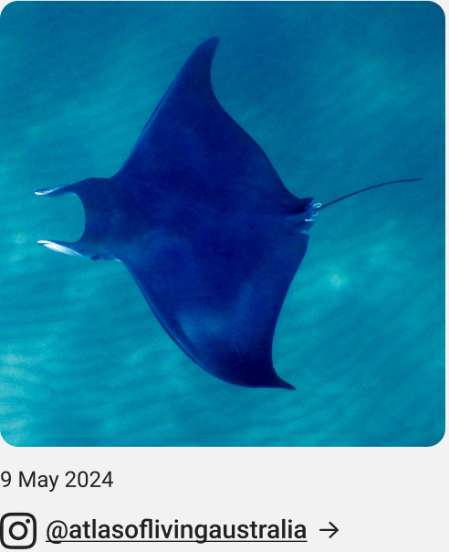

Latest ALA updates



The ALA is a one-stop-shop for Australian biodiversity data. It brings together millions of species occurrence records of both native and invasive species to support research and decision-making.
These records are aggregated from a range of data providers. The ALA houses many types of data including taxonomic information, images, sound files and associated environmental data like spatial, rainfall and temperature information all in one place.
About one quarter of research and monitoring projects that supply data to the ALA are citizen science, and about half (50.4%) of all species occurrence records in the ALA are derived from citizen science applications.
These numbers demonstrate the enormous contribution citizen science makes to overall biodiversity records in Australia.
The ALA currently holds information on more than 2,383 exotic species and 1.9 million occurrences of pests, weeds, and diseases.
Through the automated aggregation of data from more than 900 data partners, and the development of the ALA Biosecurity Hub, the ALA aims to connect people and systems to create a wholistic and informed picture of biosecurity in Australia.
ALA Labs brings together code, data analysis and visualisation using data hosted in the ALA. ALA Labs value openness, scientific transparency, and robust methods.